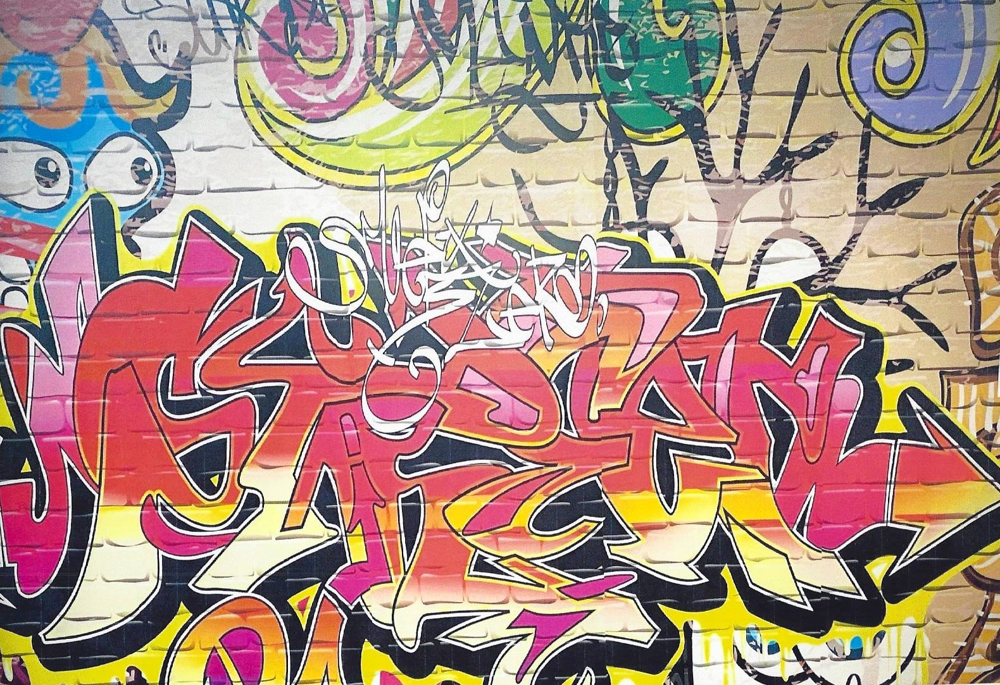
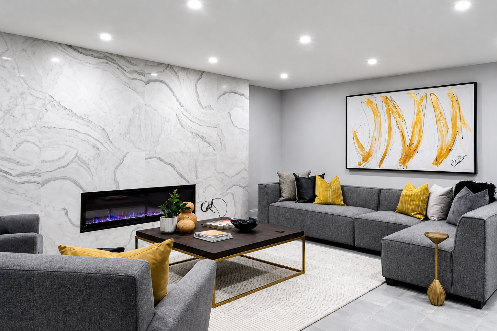
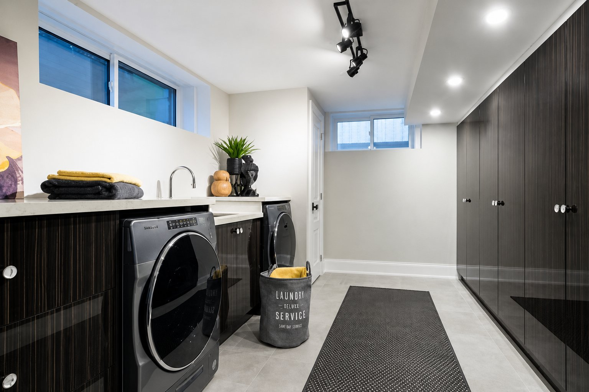
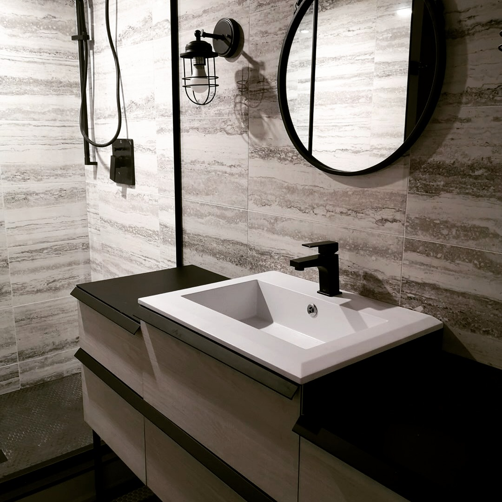
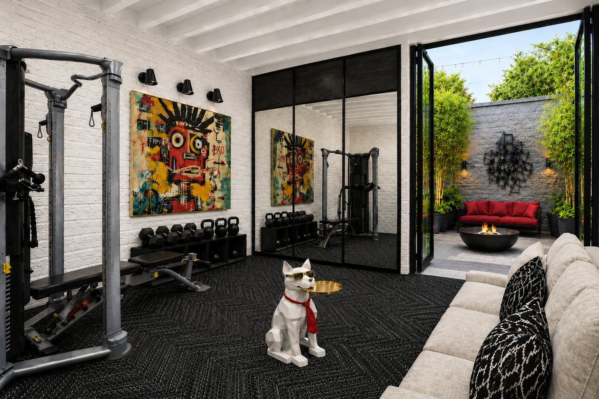
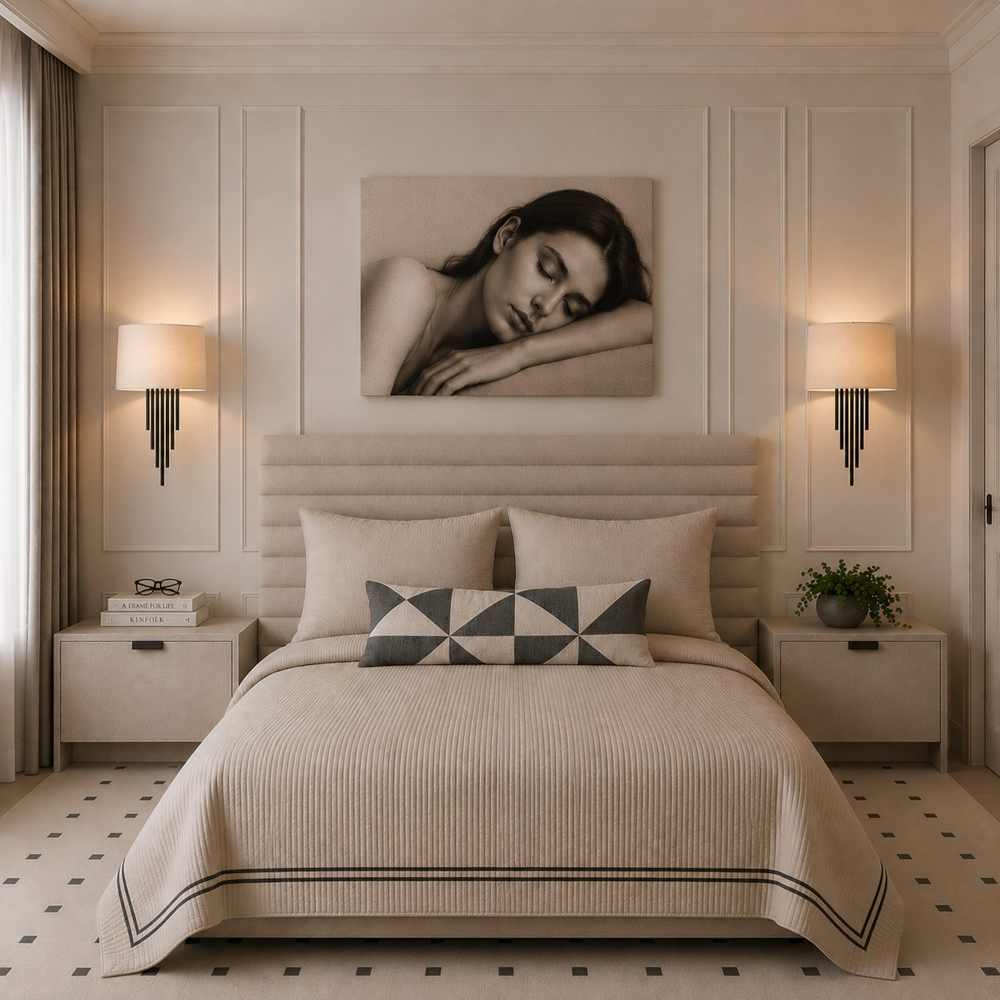
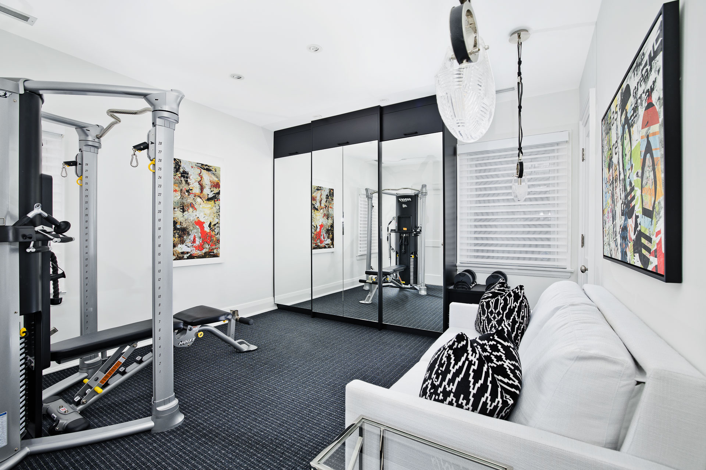

Basements
Transformative basement renovations that elevate your home.
Our Toronto and GTA projects showcase luxury basement finishing, family-friendly recreation spaces, home offices, gyms, guest suites, bedrooms, and laundry rooms. Each renovation blends architecture and purposeful design to create spaces that feel as considered as the rest of the home.

Walls removed, energy unleashed!
This former basement bedroom became a teen paradise, where a vibrant graffiti statement wall sets the tone for a space to play, relax, and connect. A custom homework and snack bar, black lockers and more complete the room.






